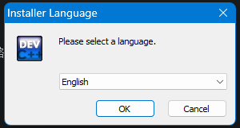
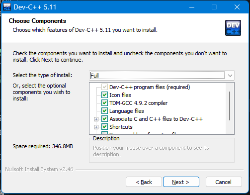
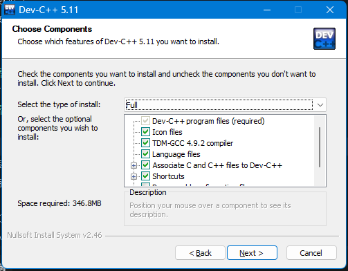
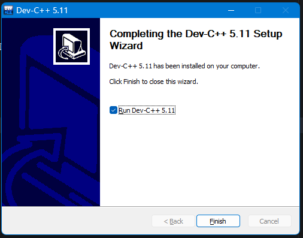
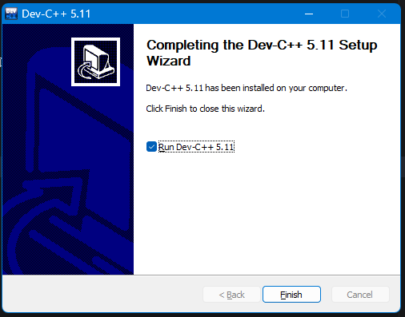
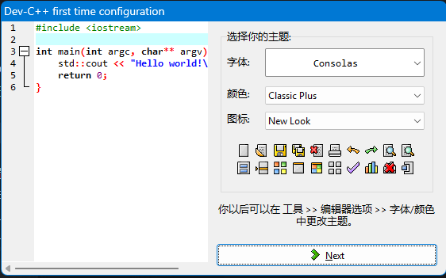
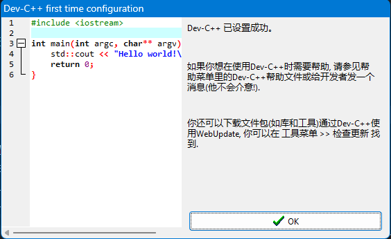
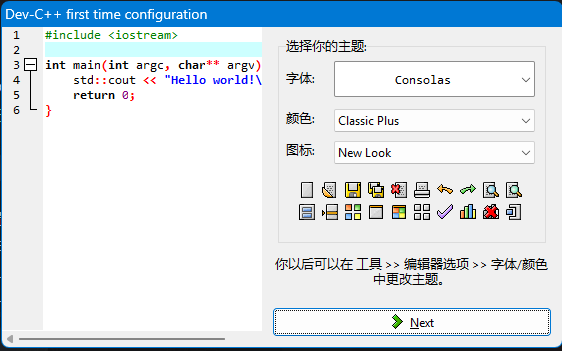
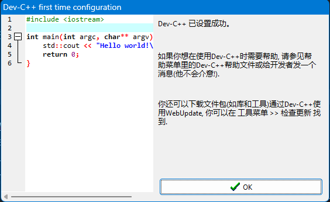

简介
- DevC++ 是一个基于MinGW的C/C++集成开发环境（IDE），它提供了一个简单而强大的界面，用于编写、编译和调试C/C++程序。
Dev C++
下载与安装
以上下载源中，官方网站似乎上不去了，SourceForge似乎需要魔法，而且下载速度不快。实在不行的话腾讯源也可以，记得选直接下载就好了。
版本选择：实际上官方最新版5.11早在2017就停止更新（48.1MB）
安装步骤：
 这里没有中文选项，直接点击OK即可
 选择I Agree  不用理会，直接Next
选择I Agree  不用理会，直接Next  选择默认安装路径（这里不建议默认，建议安装在其他盘：比如D盘或者E盘，实在不行也尽量安装在C:\Users\用户名\ 下，不建议安装在C:\Program File 下） 点击Install 等待安装完成  点击Finish（圈内的可选可不选，选了就是直接打开Dev C++而已） 完成安装
选择默认安装路径（这里不建议默认，建议安装在其他盘：比如D盘或者E盘，实在不行也尽量安装在C:\Users\用户名\ 下，不建议安装在C:\Program File 下） 点击Install 等待安装完成  点击Finish（圈内的可选可不选，选了就是直接打开Dev C++而已） 完成安装
首次配置
 这里可以选择简体中文 点击Next  这里可以不做修改，也可以选择你喜欢的字体和配色 点击Next  点击OK
这里可以选择简体中文 点击Next  这里可以不做修改，也可以选择你喜欢的字体和配色 点击Next  点击OK
然后就可以开始使用啦！
基本使用
- 创建新项目：
- 点击「文件」→「新建」→「项目…」
- 选择「控制台应用程序」，输入项目名称和保存位置
- 编写代码：
- 在自动生成的main.cpp文件中编写C/C++代码
- 编译与运行：
- 点击工具栏上的「编译并运行」按钮（绿色三角形）
- 或使用快捷键F11
- 调试：
- 设置断点：在代码行左侧单击
- 点击「调试」→「调试」开始调试
- 使用「下一步」、「单步执行」等命令控制调试流程
常用快捷键
- F9：编译
- F11：编译并运行
- F5：调试
- Ctrl+N：新建文件
- Ctrl+O：打开文件
- Ctrl+S：保存文件
CodeBlocks
下载与安装
- 官方下载地址：访问 CodeBlocks官方网站
- 版本选择：
- 建议下载带有MinGW的版本（如
codeblocks-20.03mingw-setup.exe），这样不需要单独安装编译器 - 确保选择与操作系统匹配的版本（32位或64位）
- 建议下载带有MinGW的版本（如
- 安装步骤：
- 运行下载的安装程序
- 选择安装语言（支持简体中文）
- 接受许可协议
- 选择安装类型（建议选择「Full」完整安装）
- 选择安装目录
- 等待安装完成
首次配置
- 编译器设置：
- 打开CodeBlocks
- 点击菜单栏的「Settings」→「Compiler…」
- 在「Toolchain executables」选项卡中，确保编译器路径正确指向MinGW目录
- 可以在「Optimization」选项卡中设置优化级别（如-O2）
- 调试器设置：
- 在同一对话框中切换到「Debugger」选项卡
- 确保GDB调试器路径正确设置
- 界面语言设置：
- 点击菜单栏的「Settings」→「Environment…」
- 在「View」选项卡中选择「Interface language」
- 选择「简体中文」并重启CodeBlocks
基本使用
- 创建新项目：
- 点击「File」→「New」→「Project…」
- 选择「Console application」，点击「Go」
- 选择语言（C或C++），点击「Next」
- 输入项目标题和文件夹路径，点击「Next」
- 选择编译器，点击「Finish」
- 编写代码：
- 在自动生成的main.cpp文件中编写代码
- 编译与运行：
- 点击工具栏上的绿色三角形按钮运行程序
- 或使用快捷键F9
- 调试：
- 设置断点：在代码行号左侧点击
- 点击工具栏上的调试按钮（带有小虫子图标的按钮）
- 使用「Step into」、「Step over」等控制调试流程
常用快捷键
- F9：编译并运行
- Ctrl+F9：仅编译
- F8：调试
- F7：单步进入（调试时）
- Shift+F7：单步跳过（调试时）
- Ctrl+N：新建文件
- Ctrl+O：打开文件
- Ctrl+S：保存文件 ## Visual Studio
下载与安装
- 官方下载地址：访问 Visual Studio官方网站
- 版本选择：
- Visual Studio Community：免费版本，适合学生、开源开发者和个人使用
- Visual Studio Professional：专业版，适合专业开发人员
- Visual Studio Enterprise：企业版，提供高级功能
- 安装步骤：
- 下载Visual Studio安装程序
- 运行安装程序，选择「继续」
- 在工作负载选择界面，选择「使用C++的桌面开发」工作负载
- 可以根据需要选择其他可选组件
- 点击「安装」按钮开始安装
- 等待安装完成，可能需要重启计算机
首次配置
- 开发设置：
- 首次启动时，选择开发设置（推荐选择「Visual C++」）
- 选择主题颜色
- 工作空间设置：
- 可以在「工具」→「选项」中配置各种设置
- 在「文本编辑器」→「C/C++」中可以配置代码编辑器的各种属性
- 编译器设置：
- Visual Studio已内置MSVC编译器，无需额外配置
- 在项目属性中可以设置编译选项（右键项目→「属性」）
基本使用
- 创建新项目：
- 点击「创建新项目」
- 选择「控制台应用」（Console App）
- 输入项目名称和位置，点击「创建」
- 编写代码：
- 在自动生成的源文件中编写代码
- 编译与运行：
- 点击工具栏上的绿色三角形按钮运行程序
- 或使用快捷键F5
- 也可以使用Ctrl+F5直接运行而不调试
- 调试：
- 设置断点：在代码行号左侧点击
- 按F5开始调试
- 使用F10（单步跳过）和F11（单步进入）控制调试流程
- 可以在「局部变量」、「监视」窗口查看变量值
常用快捷键
- F5：调试运行
- Ctrl+F5：直接运行（不调试）
- Ctrl+Shift+B：生成解决方案
- F10：单步跳过（调试时）
- F11：单步进入（调试时）
- Ctrl+N：新建项目/文件
- Ctrl+O：打开文件
- Ctrl+S：保存文件
- Ctrl+Shift+S：保存所有文件
- Ctrl+Z：撤销
- Ctrl+Y：重做 ## CLion
下载与安装
- 官方下载地址：访问 JetBrains CLion官方网站
- 版本选择：
- 可以下载免费试用版
- 学生和教育工作者可以申请免费的教育许可证
- 也可以选择商业版
- 安装步骤：
- 下载适合您操作系统的安装包
- 运行安装程序
- 选择安装位置和创建桌面快捷方式
- 等待安装完成
- 首次启动时需要激活许可证
首次配置
- 编译器配置：
- CLion需要外部编译器，Windows上通常使用MinGW或MSVC
- 安装MinGW或确保已安装Visual Studio（提供MSVC）
- 首次打开CLion时，它会自动检测可用的编译器
- 也可以手动配置：在「File」→「Settings」→「Build, Execution, Deployment」→「Toolchains」中配置
- 调试器配置：
- 确保已安装GDB（MinGW通常包含GDB）
- 在Toolchains设置中确保调试器路径正确
- 界面设置：
- 可以在「File」→「Settings」→「Appearance & Behavior」→「Appearance」中选择主题
- 在「Editor」中可以配置编辑器选项
基本使用
- 创建新项目：
- 点击「New Project」
- 选择「C++ Executable」或「C Executable」
- 选择项目位置和C++标准版本
- 点击「Create」
- 编写代码：
- 在自动生成的源文件中编写代码
- 编译与运行：
- 点击工具栏上的绿色三角形按钮运行程序
- 或使用快捷键Shift+F10
- 调试：
- 设置断点：在代码行号左侧点击
- 点击工具栏上的调试按钮（虫子图标）
- 或使用快捷键Shift+F9
- 使用F8（单步跳过）和F7（单步进入）控制调试流程
常用快捷键
- Shift+F10：运行程序
- Shift+F9：调试程序
- Ctrl+F9：构建项目
- F7：单步进入（调试时）
- F8：单步跳过（调试时）
- Alt+Insert：生成代码（构造函数、getter/setter等）
- Ctrl+N：新建项目/文件
- Ctrl+Shift+N：查找文件
- Ctrl+F：在当前文件中查找
- Ctrl+S：保存文件
- Ctrl+Z：撤销
- Ctrl+Y：重做 ## VS Code
下载与安装
- 官方下载地址：访问 VS Code官方网站
- 版本选择：
- 选择适合您操作系统的版本（Windows、macOS或Linux）
- 可以选择稳定版或Insiders版本（预览版）
- 安装步骤：
- 下载安装程序
- 运行安装程序
- 按照提示完成安装
- 可以选择添加到PATH、创建桌面快捷方式等选项
首次配置
- 安装C/C++扩展：
- 打开VS Code
- 点击左侧边栏的扩展图标（方块图标）
- 搜索「C/C++」并安装Microsoft官方的C/C++扩展
- 安装其他有用扩展（可选）：
- C/C++ Extension Pack：提供额外的C/C++开发工具
- Code Runner：一键运行代码
- C/C++ Themes：额外的代码主题
- Bracket Pair Colorizer：为括号添加颜色，方便识别
- 配置编译器：
- VS Code需要外部编译器，Windows上推荐安装MinGW或使用Visual Studio的MSVC
- 确保编译器已安装并添加到系统PATH
- 可以通过在终端中运行
gcc --version或cl.exe来验证编译器是否正确安装
基本使用
- 创建项目文件夹：
- 创建一个新文件夹作为项目目录
- 在VS Code中选择「文件」→「打开文件夹」，打开该目录
- 创建源文件：
- 在Explorer中右键点击，选择「新建文件」
- 创建
.c或.cpp文件
- 编写代码：
- 在新建的源文件中编写代码
- 编译与运行：
- 方法一：使用Code Runner扩展
- 安装Code Runner扩展
- 点击右上角的运行按钮或使用快捷键Ctrl+Alt+N
- 方法二：使用终端
- 打开终端（Ctrl+`）
- 使用gcc编译：
gcc filename.c -o output.exe - 运行程序：
./output.exe
- 方法三：配置tasks.json
- 按F5，选择「C++ (GDB/LLDB)」或「C++ (Windows)」
- 选择编译器
- 自动生成launch.json和tasks.json配置文件
- 再次按F5运行程序
- 方法一：使用Code Runner扩展
- 调试：
- 设置断点：在代码行号左侧点击
- 按F5开始调试
- 使用调试控制台查看变量、控制流程
常用快捷键
- Ctrl+N：新建文件
- Ctrl+O：打开文件
- Ctrl+S：保存文件
- Ctrl+Shift+S：保存所有文件
- Ctrl+`：打开/关闭终端
- Ctrl+Shift+`：创建新终端
- F5：开始调试
- Ctrl+F5：运行而不调试（需要配置）
- Ctrl+Shift+B：构建项目（需要配置tasks.json）
- Ctrl+F：在当前文件中查找
- Ctrl+H：替换
- Alt+↑/↓：上下移动行
- Ctrl+/：注释/取消注释 ## Sublime Text
下载与安装
- 官方下载地址：访问 Sublime Text官方网站
- 版本选择：
- Sublime Text 3或Sublime Text 4（最新版）
- 选择适合您操作系统的版本（Windows、macOS或Linux）
- 安装步骤：
- 下载安装程序
- 运行安装程序
- 按照提示完成安装
- Sublime Text是共享软件，可以免费使用，但会偶尔弹出购买提示
首次配置
- 安装Package Control（包管理器）：
- 打开Sublime Text
- 使用快捷键Ctrl+`打开控制台
- 复制并粘贴对应版本的安装代码（可在Package Control官网获取）
- 按Enter键执行
- 等待安装完成并重启Sublime Text
- 安装C/C++相关插件：
- 按Ctrl+Shift+P打开命令面板
- 输入「Package Control: Install Package」并回车
- 搜索并安装以下插件：
- C++ Snippets：提供C++代码片段
- SublimeLinter：代码检查工具
- SublimeLinter-gcc：GCC代码检查器
- EasyClangComplete：代码补全
- Build System Plus：增强构建功能
- 配置编译器：
- Sublime Text需要外部编译器，Windows上推荐安装MinGW
- 确保编译器已安装并添加到系统PATH
- 配置构建系统：
- 点击「工具」→「构建系统」→「新建构建系统…」
- 输入以下配置（以GCC为例）：
1
2
3
4
5
6
7
8
9
10
11
12
13
14
15{
"cmd": ["gcc", "${file}", "-o", "${file_path}/${file_base_name}"],
"file_regex": "^(..[^:]*):([0-9]+):?([0-9]+)?:? (.*)$",
"working_dir": "${file_path}",
"selector": "source.c",
"shell": true,
"variants":
[
{
"name": "Run",
"cmd": ["start", "cmd", "/k", "${file_path}/${file_base_name}.exe"],
"shell": true
}
]
} - 保存为「C.sublime-build」
- 对于C++，创建类似的配置但使用g++编译器
基本使用
- 创建文件：
- 点击「文件」→「新建文件」
- 保存为
.c或.cpp文件
- 编写代码：
- 在文件中编写代码
- 利用安装的插件提供的代码补全和片段功能
- 编译与运行：
- 确保已选择正确的构建系统：「工具」→「构建系统」→选择您创建的构建系统
- 按Ctrl+B编译代码
- 按Ctrl+Shift+B运行程序（或从构建菜单中选择「Run」）
- 调试：
- Sublime Text本身不包含调试器，需要配合外部调试器使用
- 可以安装「SublimeGDB」插件来集成GDB调试功能
- 或者使用命令行调试器
常用快捷键
- Ctrl+N：新建文件
- Ctrl+O：打开文件
- Ctrl+S：保存文件
- Ctrl+Shift+S：另存为
- Ctrl+B：构建/编译
- Ctrl+Shift+B：运行构建变体
- Ctrl+F：在当前文件中查找
- Ctrl+H：替换
- Ctrl+L：选择整行
- Ctrl+Shift+D：复制当前行
- Ctrl+X：剪切当前行（如果未选择文本）
- Ctrl+/：注释/取消注释
- Ctrl+Shift+P：打开命令面板